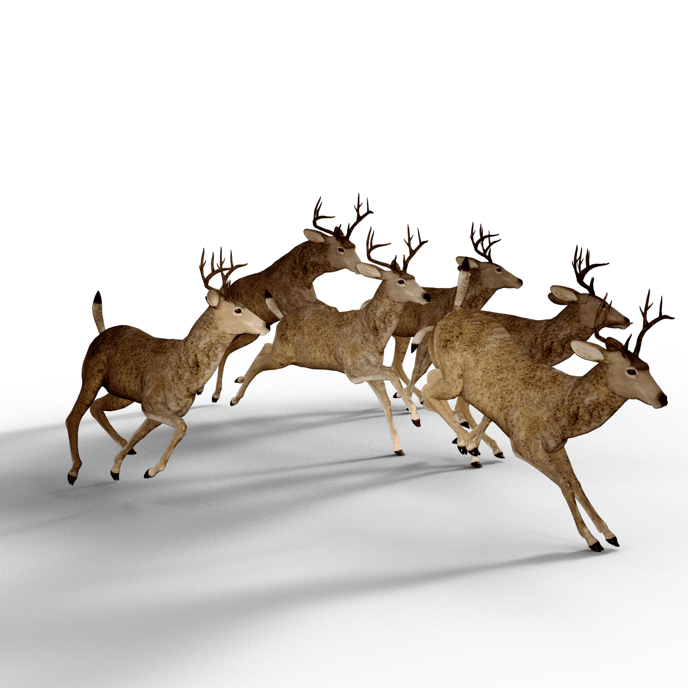
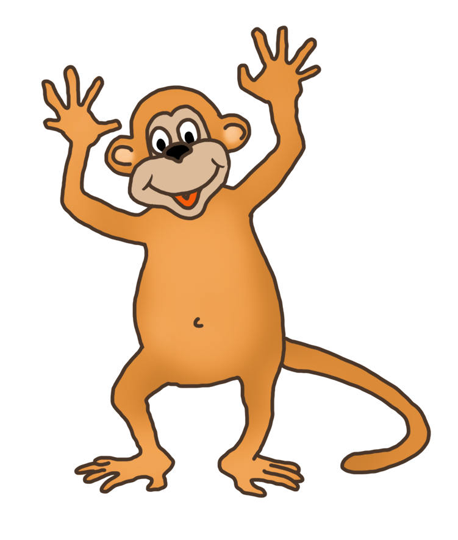
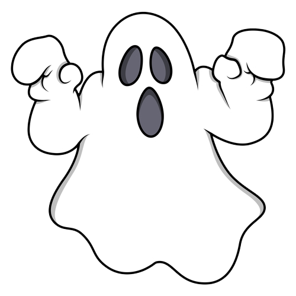
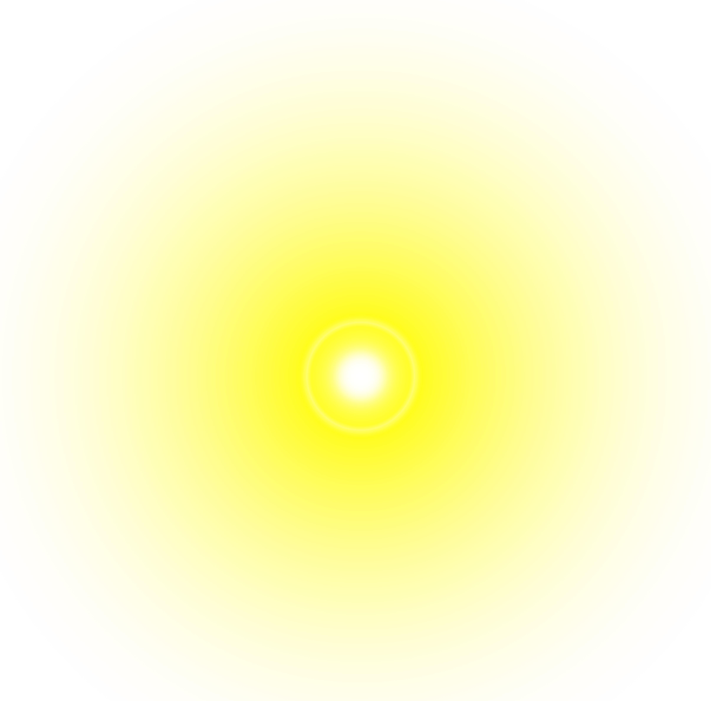
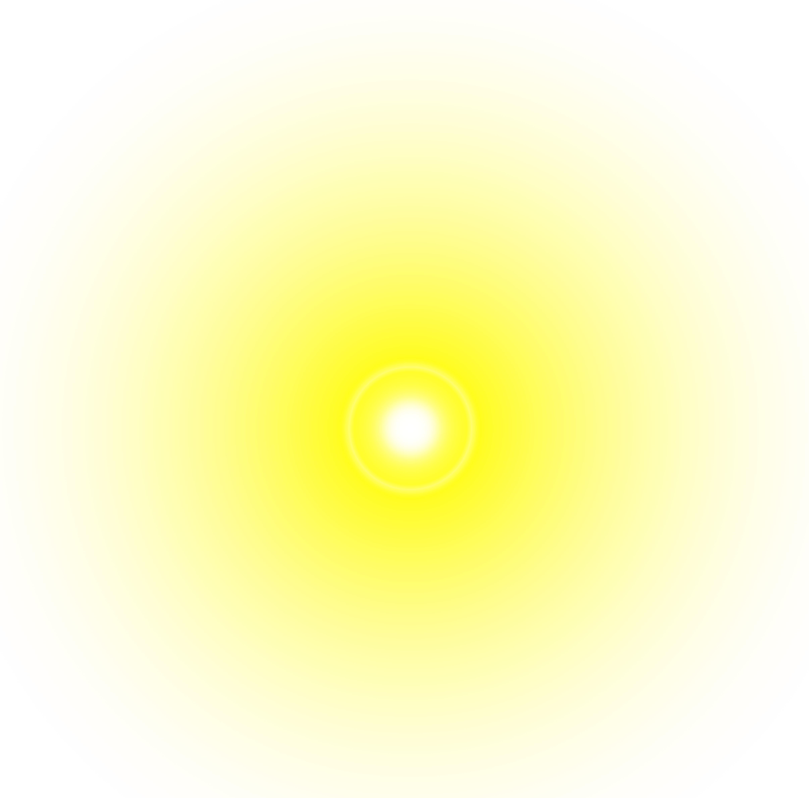
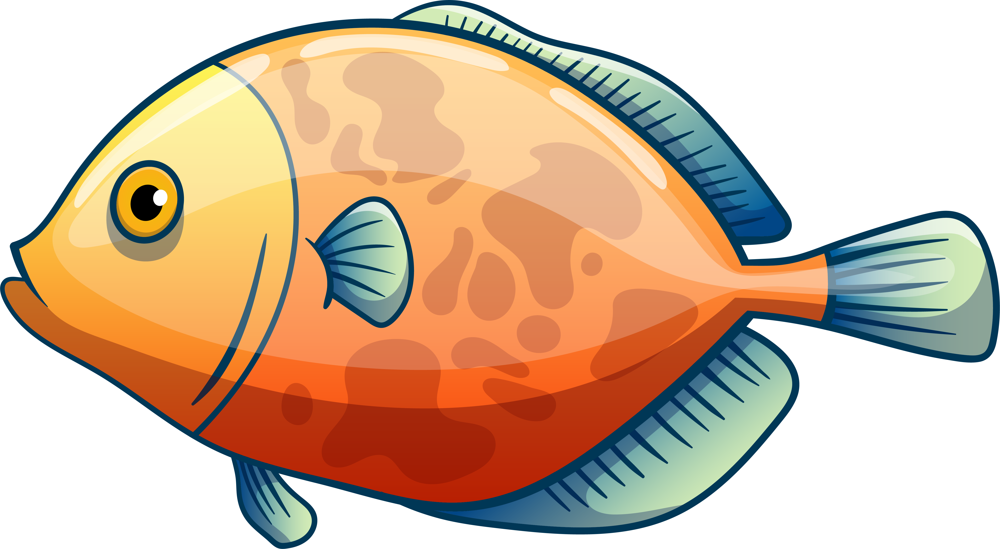
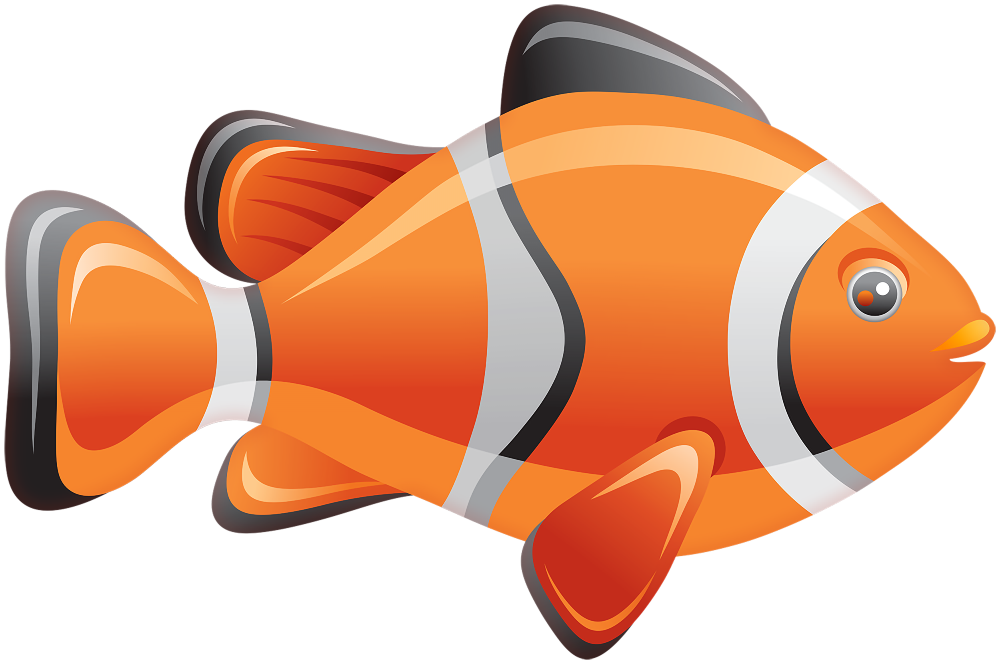
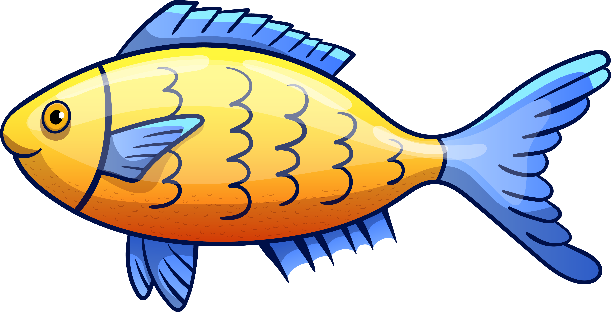
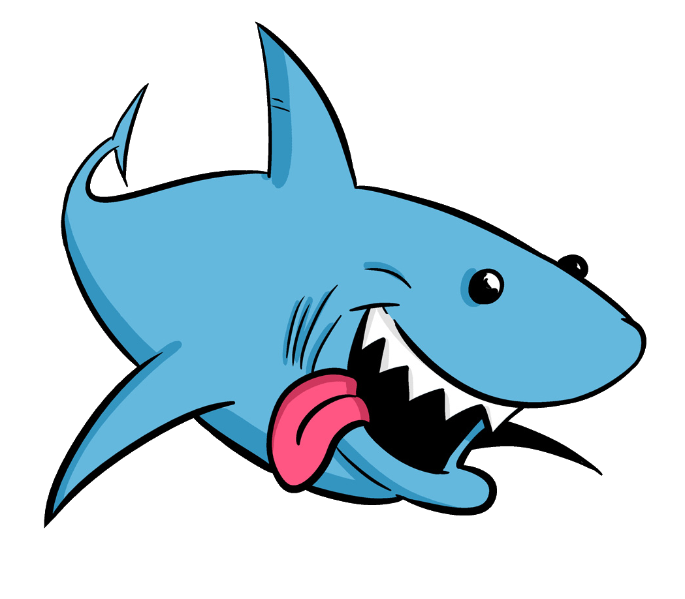

GATO ASUSTADO
Cada vez que se reproduce aumenta el tiempo que tenemos antes de la dominacion mundial gatuna
Cada vez que se reproduce aumenta el tiempo que tenemos antes de la dominacion mundial gatuna
$1,000

MANADA DELREVEZ
Se dice que esta manada a podido sobrevivir más de 1000 años solo llendo de atras hacia adelante y viseversa
Se dice que esta manada a podido sobrevivir más de 1000 años solo llendo de atras hacia adelante y viseversa
$750

MONO LOCO
Este mono a participado en locuras como la extincion de la humanidad en 2070 o la llegada de los aliens a la Tierra en 2042, espera ¿en qué año estamos?
Este mono a participado en locuras como la extincion de la humanidad en 2070 o la llegada de los aliens a la Tierra en 2042, espera ¿en qué año estamos?
$1,200

LA MUERTE
Al parecer morir es uno de los actos más comunes entre los seres vivos, especialmente si caes de un edificio, ¡¡¡que raro!!!, solo vivan y ya
Al parecer morir es uno de los actos más comunes entre los seres vivos, especialmente si caes de un edificio, ¡¡¡que raro!!!, solo vivan y ya
$600
 
GIRASOL
Este raro especimen que el ser humano llama "Girasol" tiene la especial caracteristica de convertirse en un sol
Este raro especimen que el ser humano llama "Girasol" tiene la especial caracteristica de convertirse en un sol
$1,000

FESTIN DEL TIBURON
Aqui podemos ver unos cuantos especimenes tratando de escapar(de formas tal vez no muy acertadas) del especimen devora especimenes